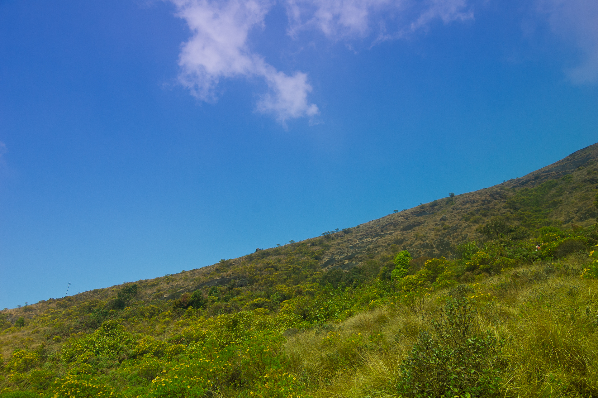
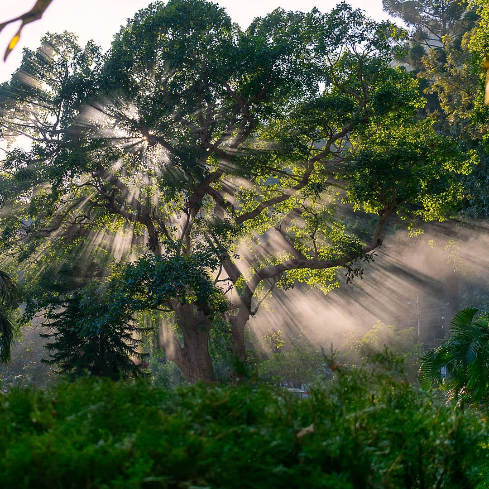
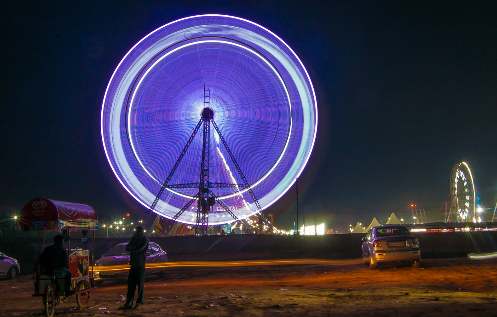
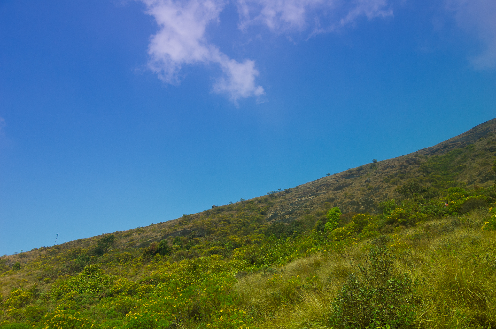
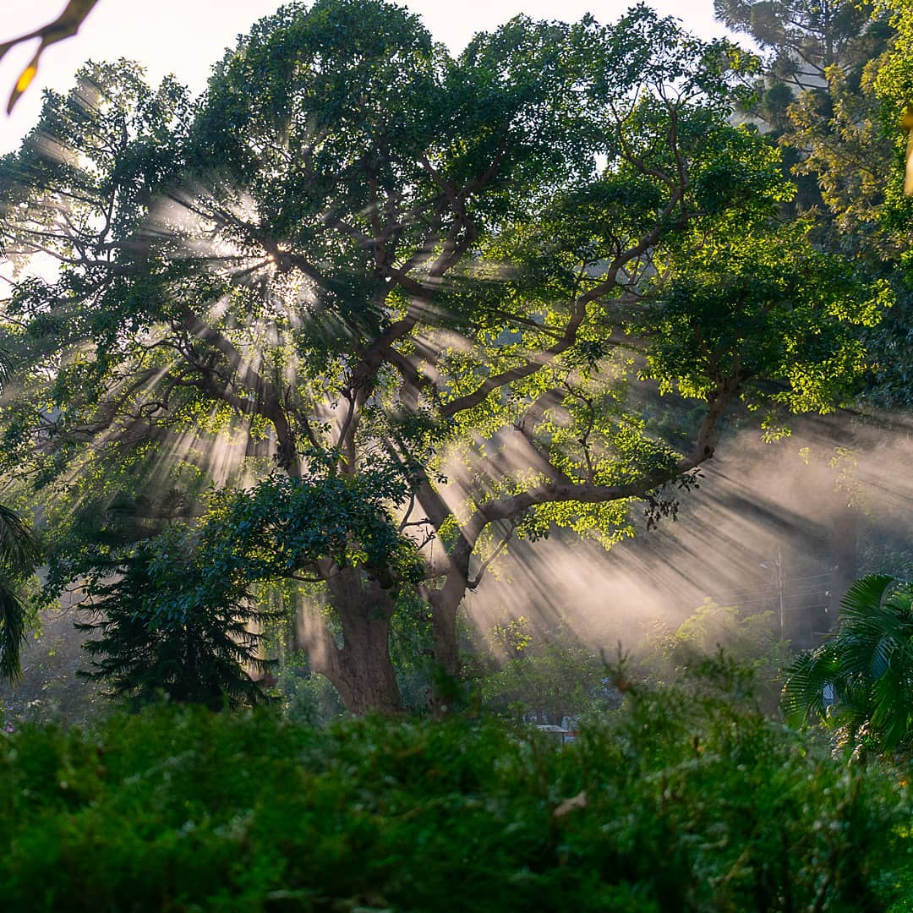
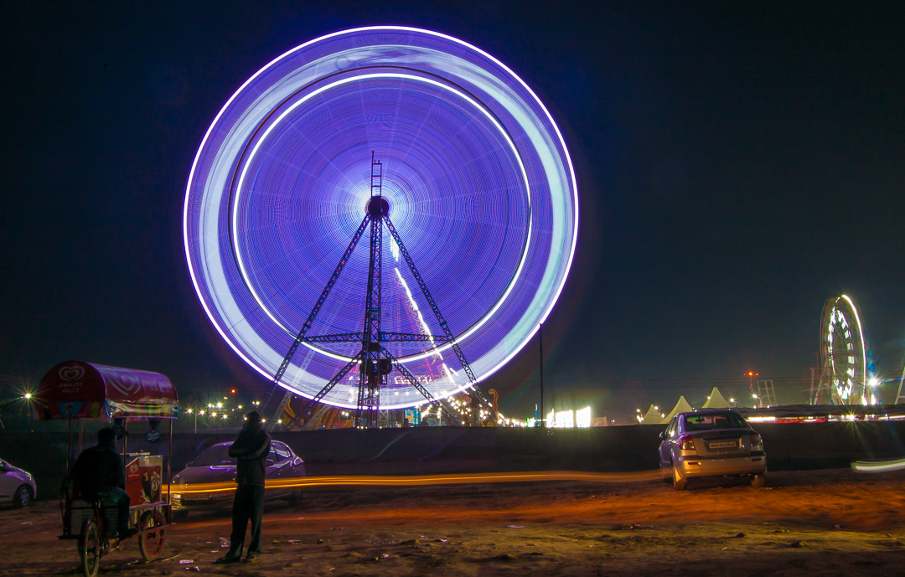
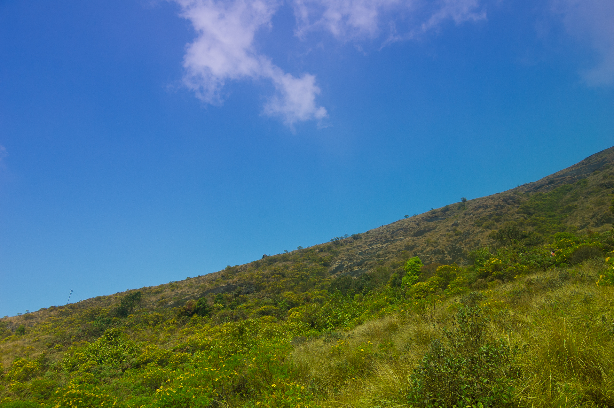
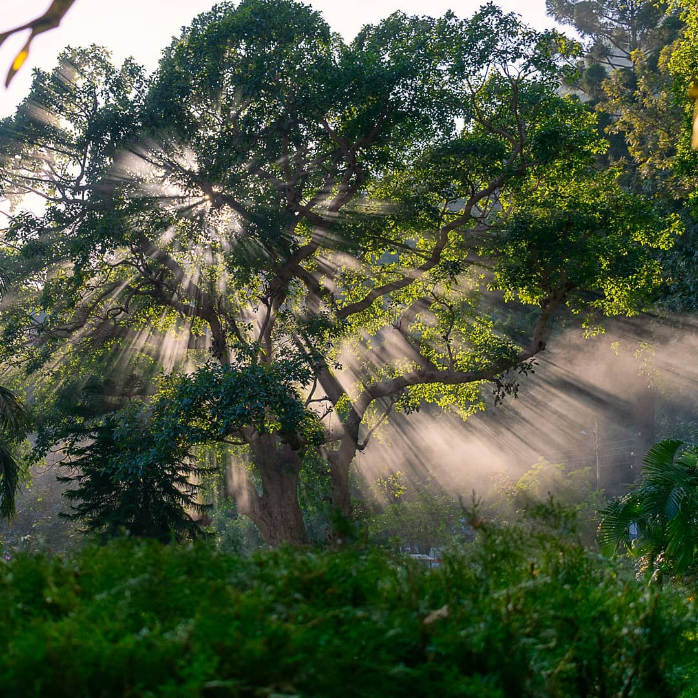
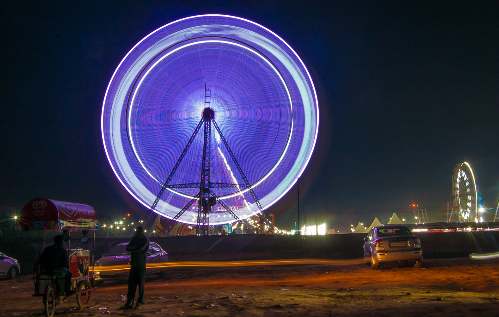

Check out the introduction video above if you prefer it over text.
Click the menu button on the top left to check out other pages.
I am a master's research scholar at the Computer Science department
at IIT Bombay. I completed the gauntlet of GATE + written exam + interview
in 2021 and was admitted into the Intelligent Systems stream.
I like graph-y stuff, so that's where my research interest lies.
Lots of interesting applications in this domain is another
attractive proposition.
All the technical stuff aside, I enjoy photography (long-exposures especially),
travelling, sight-seeing, etc. :)
Projects
I've worked in the software industry as a full-stack developer for 5-6 years before
joining IITB. As such, I don't really have a projects section in my CV like college
students do, but I'll still list some of my experiences company-wise.
Instahyre [2015 - 2019]
I spent 4 years here and contributed a lot to what was initially
an early-stage startup, enough to see it kick off into a new phase.
I worked on multiple important feature releases, such as the candidate-job
matching system and its client-side, a search page feature for
certain employers who requested it, Elasticsearch integration to
support matching and search, internal tool development, devops work, etc.
It was fun to see the company go past break-even and actually become
profitable, sought after by clients like Amazon, Microsoft, Uber, Walmart
and other biggies.
If I had been satisfied with a management position instead of delving further
into a technical/research career, I would probably have stayed back here ;-)
Openlabs Technologies and Consulting [2014 - 2015]
I started my software career in this company, and became close friends with two
senior guys who mentored me here. It was quite the experience - the company
dissolved in 10 months due to multiple reasons, but set the stage for my future
career at Instahyre. There is also a fun, and maybe a little scary, story behind
our last day at the swanky NSEZ office in Noida, but maybe for another time.
Openlabs was one of two prominent Indian python development shops around back then
(atleast in the north, I think?). My experiences here set me on a path of constant
self-development. I first used python and javascript in production here, on projects
involving an in-house framework built on top of Flask, an ERP
platform called Tryton, and multiple javascript libraries and frameworks.
Elasticsearch and search auto-complete was my first full-fledged project
that made it into production.
Hobbies
Choose hobbies you want to learn more about -:
Photography
If it isn't obvious by now, I love DSLR photography. My stock camera is an old
Nikon D40 from the 2000s. I also use a Nikon D3400 from dad's office occasionally.
Below are some photos I took during the previous decade - enjoy!



Music
I've delved into a variety of genres over the past few years, ever since I got myself
an Apple Music subscription. The last genre that I listened a lot to was progressive
rock. I also enjoy instrumentals (piano, Hindustani classical such as sarod).
Gaming
I used to be a hardcore PC gamer before I shifted to playing mostly multiplayer
with friends on console. I've played too many games to list here on the PC, and
on console I've played games such as the Uncharted series, the Destiny series,
the Halo series, and more. I haven't played much in the past few years, but
who knows, maybe I will again?
 
